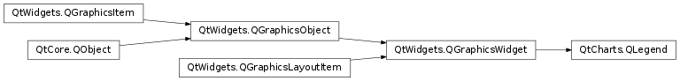

QtCharts.QLegend¶
Note
This class was introduced in Qt 5.7.
Synopsis¶
Functions¶
- def
alignment() - def
attachToChart() - def
borderColor() - def
brush() - def
color() - def
detachFromChart() - def
isAttachedToChart() - def
isBackgroundVisible() - def
labelBrush() - def
labelColor() - def
markerShape() - def
markers([series=nullptr]) - def
pen() - def
reverseMarkers() - def
setAlignment(alignment) - def
setBackgroundVisible([visible=true]) - def
setBorderColor(color) - def
setBrush(brush) - def
setColor(color) - def
setLabelBrush(brush) - def
setLabelColor(color) - def
setMarkerShape(shape) - def
setPen(pen) - def
setReverseMarkers([reverseMarkers=true]) - def
setShowToolTips(show) - def
showToolTips()
Signals¶
- def
backgroundVisibleChanged(visible) - def
borderColorChanged(color) - def
colorChanged(color) - def
fontChanged(font) - def
labelColorChanged(color) - def
markerShapeChanged(shape) - def
reverseMarkersChanged(reverseMarkers) - def
showToolTipsChanged(showToolTips)
Detailed Description¶
-
PySide2.QtCharts.QtCharts.QLegend.MarkerShape¶
-
PySide2.QtCharts.QtCharts.QLegend.alignment()¶ Return type: PySide2.QtCore.Qt.Alignment
-
PySide2.QtCharts.QtCharts.QLegend.attachToChart()¶
-
PySide2.QtCharts.QtCharts.QLegend.backgroundVisibleChanged(visible)¶ Parameters: visible – PySide2.QtCore.bool
-
PySide2.QtCharts.QtCharts.QLegend.borderColor()¶ Return type: PySide2.QtGui.QColor
-
PySide2.QtCharts.QtCharts.QLegend.borderColorChanged(color)¶ Parameters: color – PySide2.QtGui.QColor
-
PySide2.QtCharts.QtCharts.QLegend.brush()¶ Return type: PySide2.QtGui.QBrush
-
PySide2.QtCharts.QtCharts.QLegend.color()¶ Return type: PySide2.QtGui.QColor
-
PySide2.QtCharts.QtCharts.QLegend.colorChanged(color)¶ Parameters: color – PySide2.QtGui.QColor
-
PySide2.QtCharts.QtCharts.QLegend.detachFromChart()¶
-
PySide2.QtCharts.QtCharts.QLegend.fontChanged(font)¶ Parameters: font – PySide2.QtGui.QFont
-
PySide2.QtCharts.QtCharts.QLegend.isAttachedToChart()¶ Return type: PySide2.QtCore.bool
-
PySide2.QtCharts.QtCharts.QLegend.isBackgroundVisible()¶ Return type: PySide2.QtCore.bool
-
PySide2.QtCharts.QtCharts.QLegend.labelBrush()¶ Return type: PySide2.QtGui.QBrush
-
PySide2.QtCharts.QtCharts.QLegend.labelColor()¶ Return type: PySide2.QtGui.QColor
-
PySide2.QtCharts.QtCharts.QLegend.labelColorChanged(color)¶ Parameters: color – PySide2.QtGui.QColor
-
PySide2.QtCharts.QtCharts.QLegend.markerShape()¶ Return type: PySide2.QtCharts.QtCharts::QLegend.MarkerShape
-
PySide2.QtCharts.QtCharts.QLegend.markerShapeChanged(shape)¶ Parameters: shape – PySide2.QtCharts.QtCharts::QLegend.MarkerShape
-
PySide2.QtCharts.QtCharts.QLegend.markers([series=nullptr])¶ Parameters: series – PySide2.QtCharts.QtCharts::QAbstractSeriesReturn type:
-
PySide2.QtCharts.QtCharts.QLegend.pen()¶ Return type: PySide2.QtGui.QPen
-
PySide2.QtCharts.QtCharts.QLegend.reverseMarkers()¶ Return type: PySide2.QtCore.bool
-
PySide2.QtCharts.QtCharts.QLegend.reverseMarkersChanged(reverseMarkers)¶ Parameters: reverseMarkers – PySide2.QtCore.bool
-
PySide2.QtCharts.QtCharts.QLegend.setAlignment(alignment)¶ Parameters: alignment – PySide2.QtCore.Qt.Alignment
-
PySide2.QtCharts.QtCharts.QLegend.setBackgroundVisible([visible=true])¶ Parameters: visible – PySide2.QtCore.bool
-
PySide2.QtCharts.QtCharts.QLegend.setBorderColor(color)¶ Parameters: color – PySide2.QtGui.QColor
-
PySide2.QtCharts.QtCharts.QLegend.setBrush(brush)¶ Parameters: brush – PySide2.QtGui.QBrush
-
PySide2.QtCharts.QtCharts.QLegend.setColor(color)¶ Parameters: color – PySide2.QtGui.QColor
-
PySide2.QtCharts.QtCharts.QLegend.setLabelBrush(brush)¶ Parameters: brush – PySide2.QtGui.QBrush
-
PySide2.QtCharts.QtCharts.QLegend.setLabelColor(color)¶ Parameters: color – PySide2.QtGui.QColor
-
PySide2.QtCharts.QtCharts.QLegend.setMarkerShape(shape)¶ Parameters: shape – PySide2.QtCharts.QtCharts::QLegend.MarkerShape
-
PySide2.QtCharts.QtCharts.QLegend.setPen(pen)¶ Parameters: pen – PySide2.QtGui.QPen
-
PySide2.QtCharts.QtCharts.QLegend.setReverseMarkers([reverseMarkers=true])¶ Parameters: reverseMarkers – PySide2.QtCore.bool
-
PySide2.QtCharts.QtCharts.QLegend.setShowToolTips(show)¶ Parameters: show – PySide2.QtCore.bool
-
PySide2.QtCharts.QtCharts.QLegend.showToolTips()¶ Return type: PySide2.QtCore.bool
-
PySide2.QtCharts.QtCharts.QLegend.showToolTipsChanged(showToolTips)¶ Parameters: showToolTips – PySide2.QtCore.bool
© 2018 The Qt Company Ltd. Documentation contributions included herein are the copyrights of their respective owners. The documentation provided herein is licensed under the terms of the GNU Free Documentation License version 1.3 as published by the Free Software Foundation. Qt and respective logos are trademarks of The Qt Company Ltd. in Finland and/or other countries worldwide. All other trademarks are property of their respective owners.